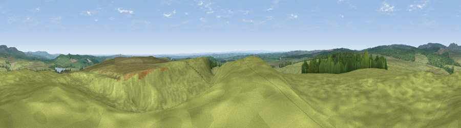

Viewpoint near Nunnykirk
#6859 in England · top 15% of its area beats it · near NunnykirkWhere it is
The exact computed spot (NZ 03275 92275). Click the marker for map links.
The view, rendered

A 360° render of this exact spot computed from the terrain model, tree cover and land cover — summer colours, afternoon light, calibrated against photographs of famous viewpoints. Real trees, hedges and buildings will differ in detail.
The panorama
Grey silhouette: terrain skyline in each direction (720 bearings, Earth curvature and refraction included). Dashed green: skyline with trees (+15 m) and buildings (+8 m) as obstacles. Blue strip: how far the ground is visible on each bearing.
Where the view opens
Wedge length = distance to the farthest visible ground on that bearing (vegetation-aware). Rings at 10, 25 and 50 km.
What fills the view
88% grassland · 10% woodland ·
Angular shares of the visible panorama (visual magnitude), not map area. Landscape diversity 0.19 (0–1 Shannon).
Key numbers
More beautiful places nearby
The staircase of upgrades: each row has a higher view potential than everything closer. Driving times are estimates from straight-line distance, calibrated against real road routing — check an actual route before setting out.
| Place | Direction | Drive | Score |
|---|---|---|---|
| Darden Rigg | NW · 6 km | ~13 min | 77.0 |
| Viewpoint near Thropton | N · 6 km | ~13 min | 81.8 |
| Dove Crag | N · 6 km | ~13 min | 82.3 |
| Viewpoint c12273_7856 | NNW · 24 km | ~39 min | 83.7 |
| Viewpoint c12396_7887 | NNW · 29 km | ~46 min | 85.7 |
| Viewpoint near Chillingham | N · 33 km | ~51 min | 88.1 |
| Long Side | SW · 101 km | ~126 min | 89.5 |
| Viewpoint near Easington | SE · 101 km | ~126 min | 90.2 |
55.22469, -1.95006 · source: screening · position refined by local search. Computed location — check access rights before visiting.